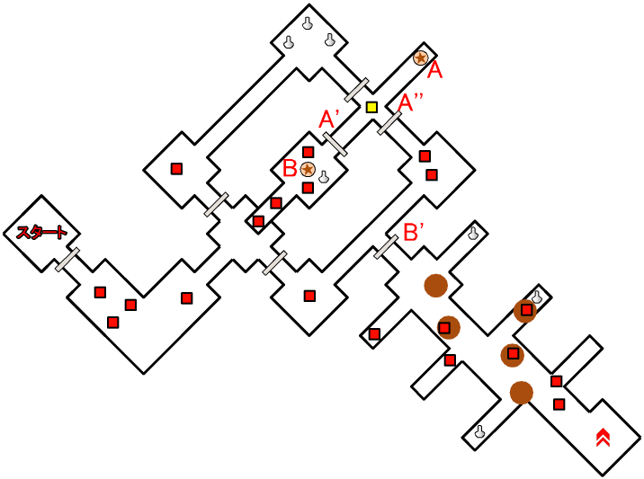
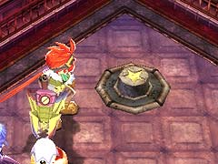
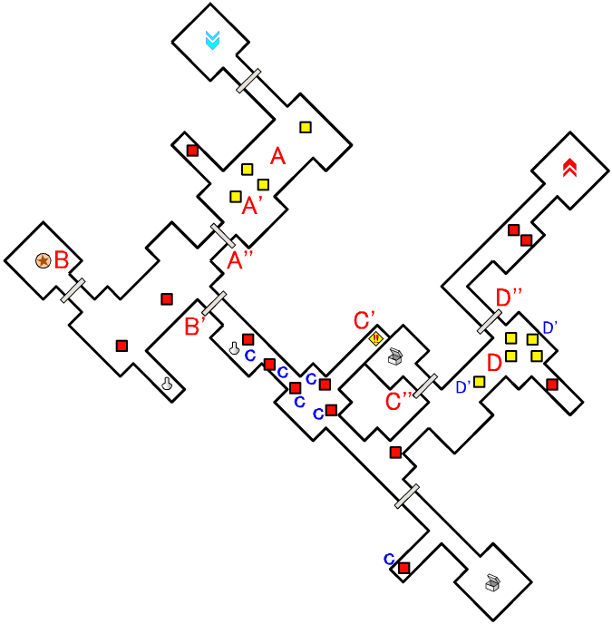
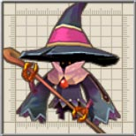
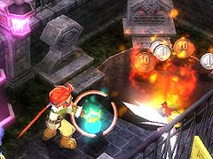
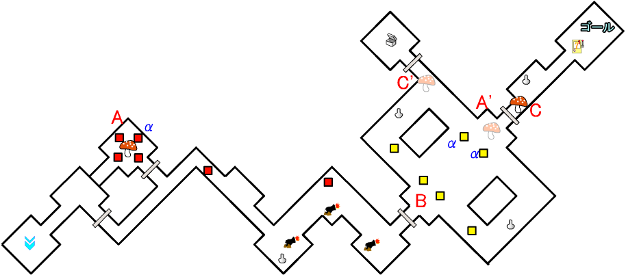
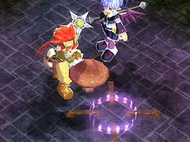
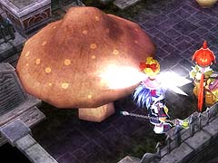

ここで、A' 地点の「うぃざーど」を倒すと、A'' 地点の扉が開きます。
主人公のレベルが高すぎて「うぃるおうぃぷす」を一撃で倒してしまう場合は、「レベルプレートG」を使ったり、「焦熱の魔法」で体力を回復させるといいです。

(レベルプレートG)
ここで、Ｄ’ 地点にいる2 体の「うぃざーど」を倒すと、D'' 地点の扉が開きます。
目次 > ゲームについて > 日本Falcom 攻略 > ZWEI II > ダンジョン一覧 > 庭園墓地 (LV.13)
らんの眼
ZWEI II (ツヴァイ 2、ZWEI II Plus)
| 概要 | 情報 | 攻略チャート |
| フード交換 | ペットについて | ボス戦 |
| 敵キャラ一覧 | ハンターランク | G-コロッセオ |
| アイテム一覧 | ガジェット一覧 | トレジャー一覧 |
| ダンジョン一覧 | クリアデータ特典 | Plusの追加要素 |
| ZWEI II攻略へ | 目次へ戻る |
| 第1 階層 |

|  | A 地点のスイッチを押すと、A' 地点の扉が開きます。 さらにA'' 地点に敵が出現します。 |
| B 地点のスイッチを押すと、B' 地点の扉が開きます。 |
| 第2 階層 |

|  | A 地点へ移動すると、敵が複数出現します。 ここで、A' 地点の「うぃざーど」を倒すと、A'' 地点の扉が開きます。 |
| B 地点のスイッチを押すと、B' 地点の扉が開きます。 | |
|  | C 地点にいる合計6 体の王冠をかぶった「うぃるおうぃぷす」を、C' 地点の火を噴いている穴に投げ込むことで、C'' 地点の扉が開きます。 主人公のレベルが高すぎて「うぃるおうぃぷす」を一撃で倒してしまう場合は、「レベルプレートG」を使ったり、「焦熱の魔法」で体力を回復させるといいです。 (レベルプレートG) |
| D 地点へ移動すると、複数の敵が出現します。 ここで、Ｄ’ 地点にいる2 体の「うぃざーど」を倒すと、D'' 地点の扉が開きます。 |
| 第3 階層 |

| α の印が付いた敵は「うぃざーど」です。 追尾してくる魔法による攻撃に、物理攻撃を無効化する防御という倒しにくい敵なので注意してください。 |
|
|  | A 地点にいるモンスターに食べられる寸前のキノコをA' 地点へ持っていくと、A' 地点の扉がひらきます。 しくしく・・・ おばけ怖いよ・・・ お父さん、どこにいるの・・・? 親切な人が助けてくれたけど・・・ |
| B 地点へ移動すると、部屋に複数の敵が現れます。 不用意に動き回って「うぃざーど」の攻撃射程範囲内に入らないように注意してください。 |
|
|  | C 地点のキノコを「フックギア」を使ってC' 地点へ移動させると、C' 地点の扉が開きます。 ちなみに、C 地点にあるキノコはよく見ると動いています。 |
| 概要 | 情報 | 攻略チャート |
| フード交換 | ペットについて | ボス戦 |
| 敵キャラ一覧 | ハンターランク | G-コロッセオ |
| アイテム一覧 | ガジェット一覧 | トレジャー一覧 |
| ダンジョン一覧 | クリアデータ特典 | Plusの追加要素 |
| ページの上部へ | ZWEI II 攻略へ | 目次へ戻る |